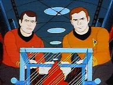

|
MANCHETE
DO EPISDIO
Episdio
anterior | Prximo episdio Sinopse:
Data Estelar: 5521.3.
 A Enterprise
encontra-se em misso de mapeamento de um ponto desconhecido da galxia, quando
capta misteriosas emisses de radio de um corpo estelar conhecido como Questar
M-17, uma estrela de massa negativa. A nave segue para investigar estes sinais
e enfrenta srios efeitos gravitacionais criados pelo Questar. Apesar disto a
nave conseguir entrar em rbita.
Eles encontram a fonte dos sinais que
atraram a Enterprise, uma gigantesca nave no identificada em rbita, abandonada
e sem energia, que segundo as leituras de Spock teria mais trezentos milhes de
anos de idade. Kirk lidera um grupo de investigao do qual fazem parte Spock,
McCoy e Scott. Uma vez l eles descobrem que a tripulao, aparentemente um tipo
de vida insetoide teria tentado destruir a nave,mas no encontram nada que justifique
as emisses de radio que levaram a Enterprise at aquele lugar do espao.
O Grupo encontra o que parece ser o centro de comando da nave aliengena,
e assim que esto em seu interior uma gravao comea a ser reproduzida, informando
que a tripulao tentava destruir a nave para evitar que uma criatura malvola
a bordo atingisse outros planetas. Quase ao fim da gravao uma reao em cadeia
tem inicio no interior da nave, e exploses comeas a pipocar por todos os lados.
O grupo retorna a Enterprise, mas a criatura a qual a mensagem se referia, ainda
viva depois de todos os milhares de anos, tambm transportada a bordo e toma
conta dos controles da nave.
Kirk manda que Scott arme um dispositivo
de auto destruio na engenharia, mas a criatura impede o engenheiro, e depois
usa os fasers da Enterprise para destruir a nave morta de onde veio. A criatura
planeja usar a Enterprise para deixar o campo de atrao da estrela morta, mas
Kirk manda que Spock isole o console de navegao com um campo de fora magntico.
A criatura dispara contra a tripulao da ponte usando os sistemas internos de
defesa, querendo obrigar Kirk tir-la de seu exlio.
O capito finge
concordar, mas ao invs disto, marca um curso direto contra a estrela morta. Acreditando
que a Enterprise ir se chocar contra a estrela, a entidade deixa a nave, mas
fica presa no campo gravitacional da estrela morta enquanto a Enterprise se salva
no ultimo minuto usando o efeito estilingue para fugir do impacto e retorna
a sua misso inicial. Comentrios:
"Beyond the Farthest Star"
um daqueles episdios que a gente sempre quis ver na Serie Clssica mas
raramente tinha chance, com muita ao, muitos disparos de fasers, uma gigantesca
e absolutamente diferente nave estelar aliengena, e aliens alm da nossa imaginao,
e de sobremesa, nosso conhecido efeito estilingue.
Apesar da Srie
Animada no ser assim to animada, permitia aos autores usar mais a criatividade
do que na Serie Clssica, no que diz respeito ao contexto na qual as aventuras
aconteciam. Ao vivo, as dificuldades tcnicas e oramentrias inviabilizariam
a produo de episdios como este. Com tais limitaes minimizadas, temos um episodio
com um plot meio manjado, que a misteriosa nave aliengena abandonada, e um
mistrio para resolver, mas apesar de disto o segmento consegue divertir.
Com uma relativamente extensa cadeia de eventos compactada em vinte minutos,
a historia assume um ritmo agradvel, que permite ao expectador formular suas
prprias teorias, mas no se demora demais em divagaes. Cada segundo em tela
preenchido com algum tipo de ao, e vamos de quadro em quadro nos envolvendo
com trama. Este segmento pura diverso, nada mais, nada menos, e dificilmente
funcionaria bem em Live Action, mas encontra seu lugar com na Srie Animada.
Por outro lado, no h muito que tirar do episodio, se excluirmos as cenas
de ao e todo o disse me disse sobre a provvel origem da nave Insetoide. No
d para reclamar, pois nem sempre se pode fazer muito em vinte minutos, mas este
segmento no mesmo um clssico de Jornada e dado que o publico alvo da
serie originalmente era um publico adolescente, tal plot at que se justifica.
De qualquer forma d para assistir sem muito stress. Citaes:
Spock - "The crew tried to destroy the ship herself."
("A tripulao tentou destruir a prpria nave.") Trivia:  Em ao os cintos de suporte de vida.
Em ao os cintos de suporte de vida.
Este foi o primeiro episdio da Serie Animada a ir ao ar, exatamente sete
anos aps a primeira exibio de When no Man has Gone Before, tambm
escrito por Samuel A. Peeples, autor deste episdio.
O chefe de transporte Kyle, personagem da Srie Clssica, no foi dublado
pelo ator John Winston, que fazia o papel em Live Action.
Ficha
tcnica: Escrito por
Samuel A. Peeples
Direo de Hal Sutherland
Exibido 08/09/1973
Produo: 04 Elenco:
William Shatner como James Tiberius Kirk
Leonard
Nimoy como Spock
DeForest Kelley como Leonard McCoy
James
Doohan como Montgomery Scott
George Takei como Hikaru Sulu
Nichelle Nichols como Uhura
Elenco convidado:
James Doohan comandante aliengena
James Doohan como aliengena
maligno
James Doohan como engenheiro
James Doohan como tenente
Kyle
Episdio
anterior | Prximo episdio
|